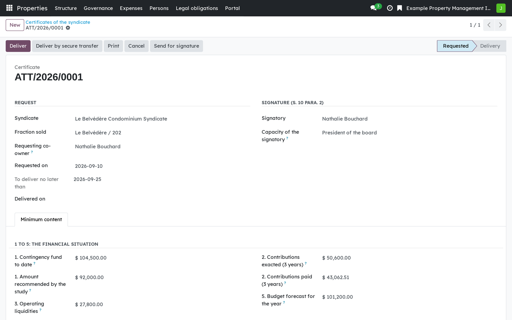

A maintenance log with its author, the conditions of the regulation, and the review and update deadlines.

A certificate of the syndicate: what the register already knows is proposed, what it does not know remains to be entered.
Version française plus bas.
The Civil Code of Québec requires a syndicate of co-ownership to keep a maintenance log (art. 1070.2), to obtain a contingency fund study (art. 1071), and to provide documents to a buyer. The Code sets none of the figures: they are in the Regulation respecting various co-ownership rules (CQLR, c. CCQ, r. 8.01), in force since 14 August 2025. This module carries those documents with the conditions the regulation puts on their authors, and dates every obligation from the text rather than from commentary.
A maintenance log with its author, the conditions of the regulation, and the review and update deadlines.

A certificate of the syndicate: what the register already knows is proposed, what it does not know remains to be entered.
Requires Properties: foundation (bf_property_core) and Co-ownership:
common expenses and calls for contributions (bf_property_finance). Three
bridges extend it when their other side is installed: Co-ownership: the maintenance
log and operations (bf_property_operations_records), Co-ownership:
electronic signature (bf_property_sign) and Co-ownership: secure
hand-over of documents (bf_property_securetransfer).
This is software, not legal advice.
Business Source License 1.1. You may use this module in production for your own internal business operations, which include administering immovables that you own or that you are constituted to administer, and letting a person acting on your behalf use your instance for that purpose. Administering immovables for the account of others, or providing the module to third parties as a product or service, whether hosted, managed or resold, requires a separate written agreement with the licensor. Each version converts to LGPL-3.0-or-later on the Change Date stated in the LICENSE file, which sets out the exact terms.
Le Code civil du Québec oblige le syndicat de copropriété à tenir un carnet d'entretien (art. 1070.2), à obtenir une étude du fonds de prévoyance (art. 1071) et à fournir des documents à l'acheteur. Le Code ne fixe aucun chiffre : ils sont au Règlement établissant diverses règles en matière de copropriété divise (RLRQ, c. CCQ, r. 8.01), en vigueur depuis le 14 août 2025. Ce module porte ces documents avec les conditions que le règlement pose à leurs auteurs, et date chaque obligation à partir du texte plutôt que de la doctrine.

Un carnet d'entretien avec son auteur, les conditions du règlement, et les échéances de révision et de mise à jour.

Une attestation du syndicat : ce que le registre sait déjà est proposé, ce qu'il ignore reste à saisir.
Exige Immeubles : socle (bf_property_core) et Copropriété : charges et
appels de fonds (bf_property_finance). Trois ponts le prolongent quand
l'autre côté est installé : Copropriété : le carnet et l'exploitation
(bf_property_operations_records), Copropriété : signature électronique
(bf_property_sign) et Copropriété : remise sécurisée des documents
(bf_property_securetransfer).
Ce logiciel ne donne pas d'avis juridique.
Business Source License 1.1. Vous pouvez utiliser ce module en production pour vos propres activités internes, ce qui comprend l'administration des immeubles dont vous êtes propriétaire ou que vous êtes constitué pour administrer, et l'usage de votre instance à cette fin par une personne qui agit pour votre compte. Administrer des immeubles pour le compte d'autrui, ou fournir le module à des tiers comme produit ou service, hébergé, géré ou revendu, exige une entente écrite distincte avec le concédant. Chaque version passe sous LGPL-3.0 ou ultérieure à la date de changement inscrite au fichier LICENSE, qui fait foi.